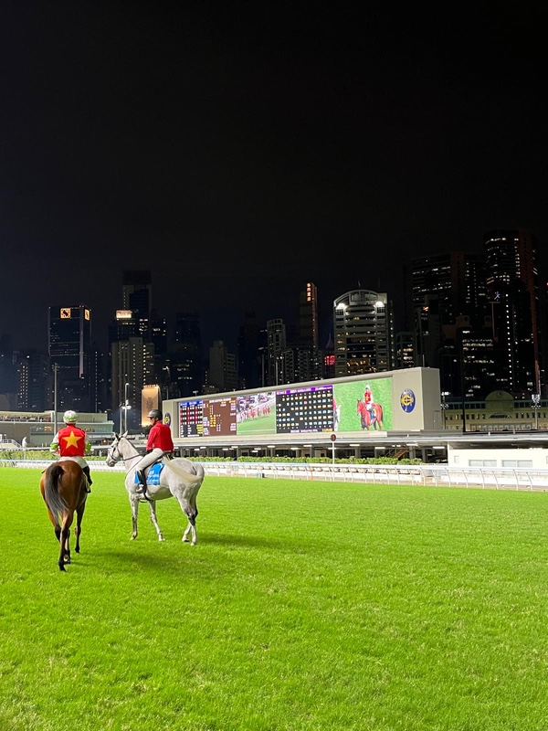

Horse Racing at Happy Valley: The Best HK$10 Night Out
Wednesday night at Happy Valley Racecourse is one of the best-value nights in the city. The season runs from September to July. The first race is at about 6:45pm, and there are around 8 races.
What it's like
Entry to the public enclosure is HK$10, paid with your Octopus card at the gate. Inside, it's an outdoor beer-garden party with horses running past a ring of skyscrapers. You can go and never bet at all. Most students treat it as a social night.

If you do bet
- The minimum bet is HK$10. “Win” means your horse must come first. “Place” means it finishes in the top three.
- Set a limit before you go. Races are every 30 minutes and it adds up fast.
Getting there
Causeway Bay MTR plus a 10-minute walk, or a tram that stops right outside.